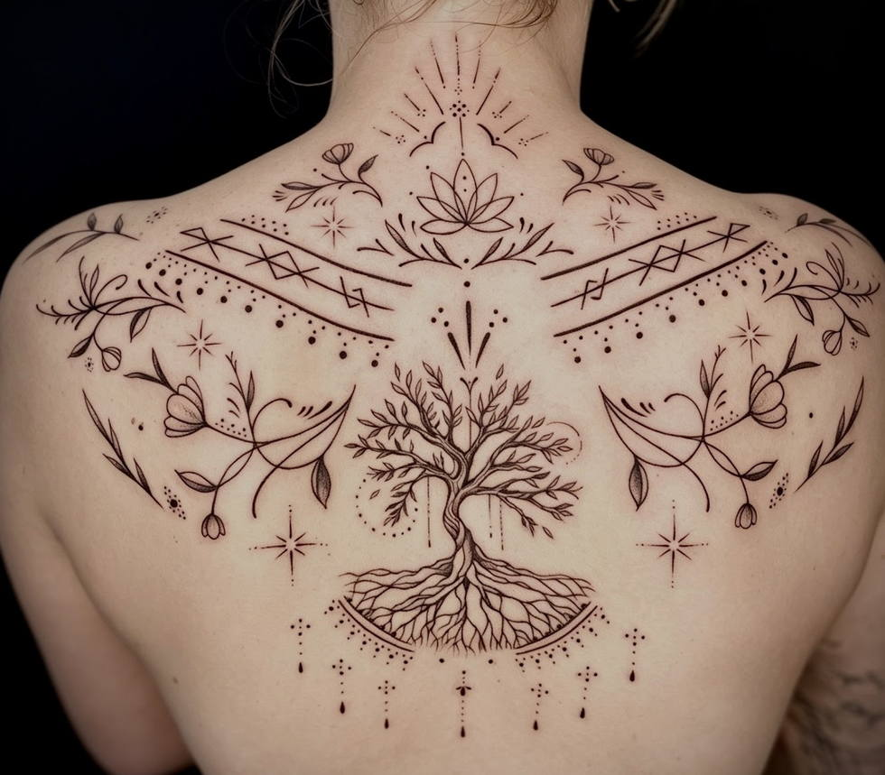
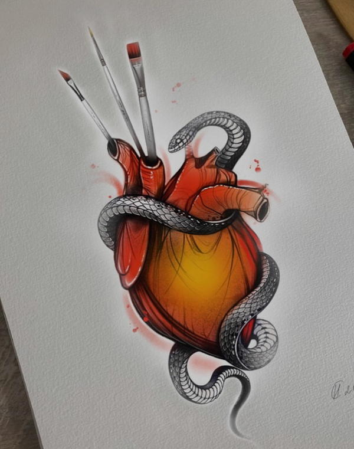
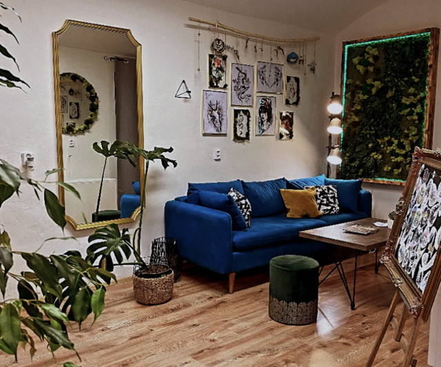

Řekněte mi, co chcete. Návrh nakreslím a měním ho, dokud nesedí tvarem i místem na těle.
Kreslím na tabletu. Návrh uvidíte dřív, než začneme.

Tetovací studio v Nuslích, na náměstí Bratří Synků. Tetuje Nadiia.
Cenu řeknu podle návrhu a velikosti. Zavolejte a domluvíme se.
Zavolat 773 502 529Jen na objednání.
„Moje první tetování bylo právě tady a nemám co vytknout. Téměř bez bolesti, zájem ze strany tatérky, jestli je vše v pořádku po celý průběh tetování.“
Michaela
Dělám jemnou linku, blackwork, tuš i barvu. Klepnutím kus přiblížíte, prstem si ho posunete.Kliknutím kus přiblížíte, tažením nebo kolečkem si ho posunete.
Menší kusy dělám taky: kotník, předloktí, lýtko, stehno.

Chodí ke mně lidi, co u mě mají první tetování, i ti, co se vracejí šest let a mají ode mě celý rukáv.
Po sezení vám řeknu, jak se o tetování starat. Když je potřeba, uděláme korekturu.
Světla„Pokud váháte, mrkněte na její portfolio a jednoduše vás dostane.“
Martin„Za mě 100 % servis, rychlé termíny, velmi milý přístup i profesionální rady.“
Kaja„To, co jsem si přála, jsem dostala, prostor je nádherný a Nadia má prostě naprosto šikovné ruce.“
Klára„Tetování krásně ošetřila, následnou korekci provedla zdarma.“
Najdete mě na náměstí Bratří Synků, u tramvajové zastávky stejného jména. Termín si domluvíme po telefonu.

„Příjemné, útulné a čisté studio ve kterém se cítíte jako v nebeském ráji.“
Ełiss, Google
Jen na objednání.